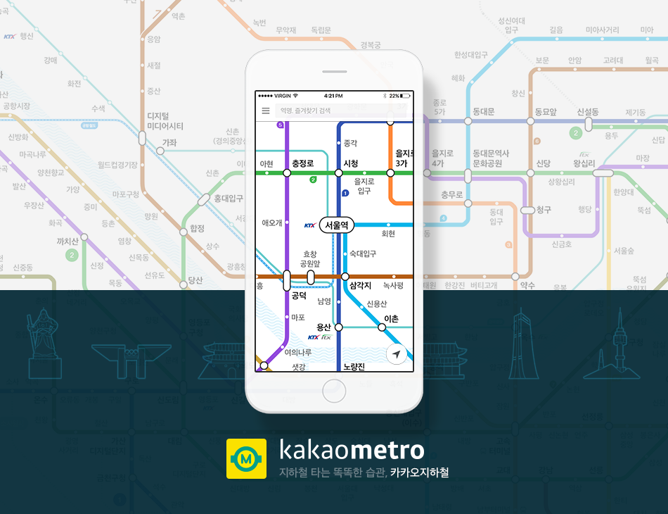
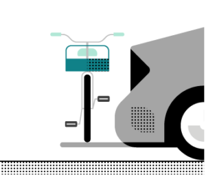
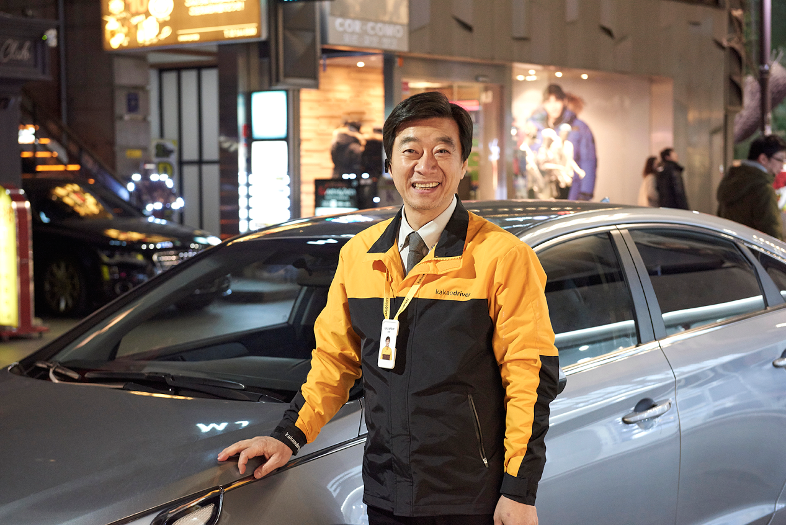

카카오, ‘카카오지하철’ 앱 출시
우버의 꼼꼼한 디테일, '우버 바이크'
모바일 대리운전 서비스 '카카오드라이버' 출시
카카오가 6월8일, 다음카카오 시절 인수했던 안드로이드 앱 ‘지하철 내비게이션’을 ‘카카오 지하철’로 업데이트하고, iOS 버전도 새로 출시했다. 실제 역 위치를 고려한 자체 노선도를 제작해 적용하고 전국 모든 지하철역 출구와 인근 정보를 제공하는 것이 특징이다.
 카카오지하철에는 카카오가 직접 제작한 지하철 노선도가 적용됐다. 각 지하철역의 지리적 위치와 노선의 특징을 고려했으며, 노선도 상에 지역별 주요 랜드마크를 표기해 이용자의 이해를 돕는다. 예를 들면 회현역 근처에는 남대문이, 여의도역 근처에는 63씨티가 형상화돼 노선도에 나타나 있다. 급행 지하철 노선도도 확인할 수 있다.
우버는 자동차와 비행기, 헬리콥터는 물론 요트까지 그 영역을 넓혔다. 그리고 쉽게 생각하지 못했던 곳까지 사업 영역을 확장했다. 어쩌면 이건 북극에서 냉장고를 파는 것과도 비슷한데, 바로 암스테르담에서 런칭한 ‘우버 바이크’ 서비스다.

우버가 자전거를 빌려주는 것은 아니다. 자전거 이용자는 자전거를 실을 수 있는 장치가 붙어있는 차량을 호출할 수 있다. 역시 사람보다 자전거가 많은 암스테르담에서 가능한 서비스겠다. 자전거를 타다 지치거나 갑자기 비가 오는 등의 상황에서 이용할 수 있다. 당연히 이 서비스에도 우버 블랙과 우버X 등을 이용할 수 있다. 우버 바이크는 승차 위치를 선택할 때 옵션으로 지정할 수 있다. 다만 이 서비스는 우버X와 동일한 가격에 추가로 4유로가 따라 붙는다.
카카오는 5월31일 모바일 대리운전 호출 서비스 ‘카카오드라이버’의 승객용 앱을 출시하고 정식 서비스를 시작한다고 밝혔다. 택시와 마찬가지로 호출부터 결제까지 모든 과정이 앱으로 가능하다. 출시 시점에 전국 대리운전기사의 40% 이상인 약 5만명의 대리운전 기사회원과 함께한다.
카카오 드라이버를 이용하기 위해서는 구글플레이나 앱스토어에서 카카오드라이버 승객용 앱을 내려받은 후 카카오 계정으로 가입하고, 자동결제를 위한 카드 정보와 운행 차량 정보 등을 입력하면 된다. 앱을 실행해 출발지와 목적지를 설정하면 예상 이용금액이 나타나며 결제할 카드와 운행할 차량을 확인한 후 호출 버튼을 누르면 기사 배정이 시작된다. 출발지와 목적지를 확인한 기사가 호출을 수락하면 배정이 완료된다